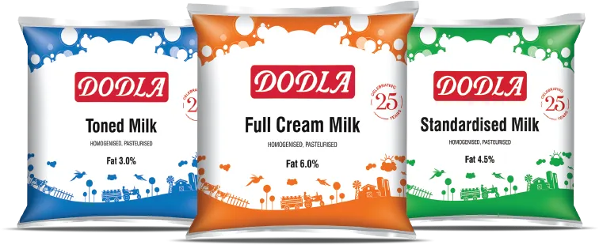
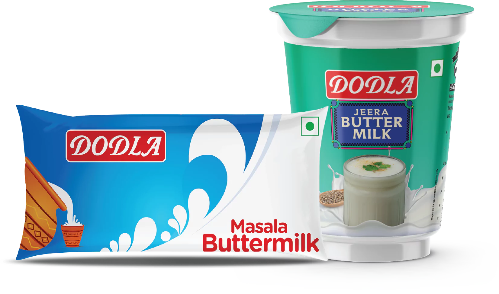
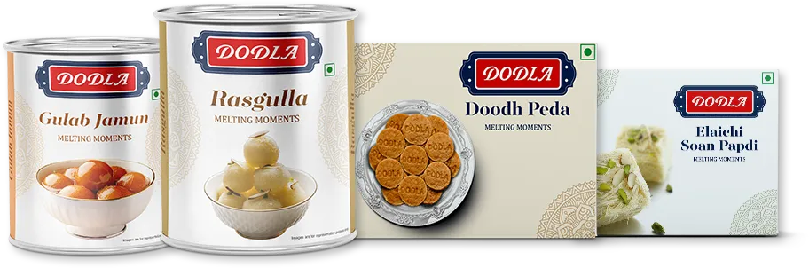
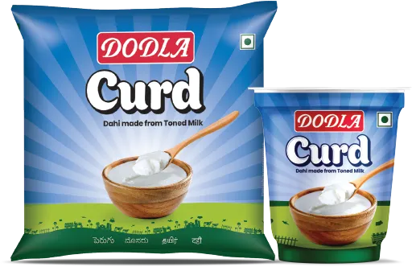

Milk
Full Cream Milk

Hygienically sourced fresh milk directly from farmers reach our
chilling centres then processed and packaged in our dairy plants.
Dodla Milk reaches your home pure and untouched by hand.
Explore More
Read more |
Comments (24) | March 16, 2015
Butter Milk
Masala butter Milk

Made with fresh curd & spices, our Buttermilk is rich & refreshing
which makes for a delightful summer.
Explore More
Thick and tasty curd that brings health and variety to your meals
come in a range of packages: pouches, cups, and buckets.
Read more |
Comments (2) | March 15, 2015
Sweets
DODLA Sweets

Indulge in authentic indian sweets, crafted out of rich
traditional recipes. From melt-in-your-mouth Soan Papdi to creamy
Rasgullas, enjoy timeless favourites & delightful innovations.
Dodla Sweets is a renowned Indian brand famous for its wide range of
traditional sweets and snacks, offering an array of delights like
Laddu, Jalebi, Barfi, Kaju Katli, and Soan Papdi. Known for its
commitment to using fresh, high-quality ingredients such as pure
ghee and saffron, the brand is particularly popular during festivals
like Diwali and Holi, where its sweets are a symbol of celebration.
With its focus on preserving authentic flavors through time-tested
recipes.Dodla Sweets is a renowned Indian brand famous for its wide
range of traditional sweets and snacks, offering an array of
delights like Laddu, Jalebi, Barfi, Kaju Katli, and Soan Papdi.
Known for its commitment to using fresh, high-quality ingredients
such as pure ghee and saffron, the brand is particularly popular
during festivals like Diwali and Holi, where its sweets are a symbol
of celebration.
Read more |
Comments (5) | March 14, 2015
Curd
DODLA Curd

Indulge in our lite curd, perfect for those conscious of their
fitness. It's low in fat, making it the ideal choice for a healthy
lifestyle.
Creative Commons Attribution 3.0 LicenseIt is part
of the Dodla Group, which has built a strong reputation in the dairy
industry for its fresh, nutritious, and delicious products. Curd
Dodla provides a variety of dairy offerings, including fresh curd,
flavored yogurt, milk, and buttermilk, which are made using advanced
processing.
Read more |
Comments (8) | March 16, 2015
.png)